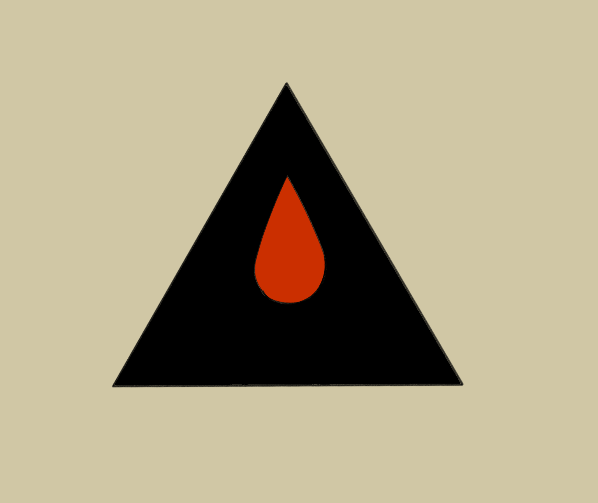
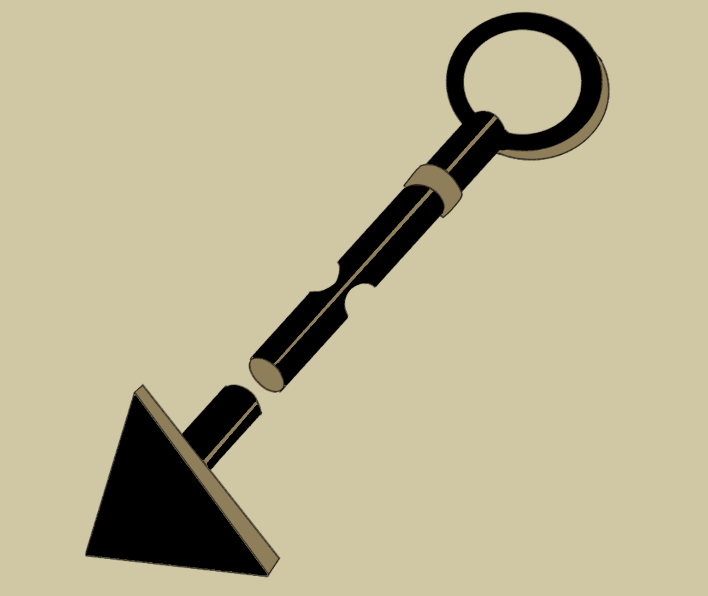
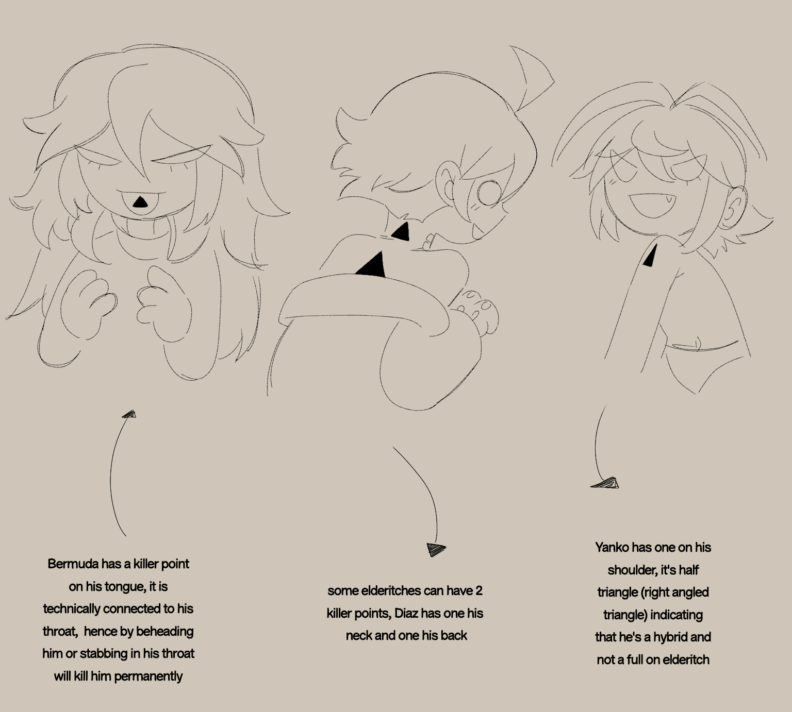

The Triangle Point
How to ensure the Permanent Death for an ElWhat is the Killers Mark
The Triangle Point, also called the Els Heart Point or the Killer's point, is a
triangular symbol that indicates the location of an Eldritch's "heart." Piercing
this specific point kills the Eldritch permanently.

The High Els Leader brands each citizen with an Els core, choosing its location ounce they experienced their first eclipse month. The branding is done with a hot stick with ontop a hot triangle mark, causing severe burn

Branding stick belongs to Latavan, each leader has its own design for their type of "stick"
If not pierced through the triangular core, an Eldritch can regenerate trough the black saunas spawn. However, piercing the core ensures their permanent death. an extra note is that the mark is highly sensitive. So even touching it can make someone twitch (can or cant be painfull)
Placing

other species have a kill mark Aswell excluding the earthkins and mythicals*

© 2023-2024 DEATHENIZE. All rights reserved.